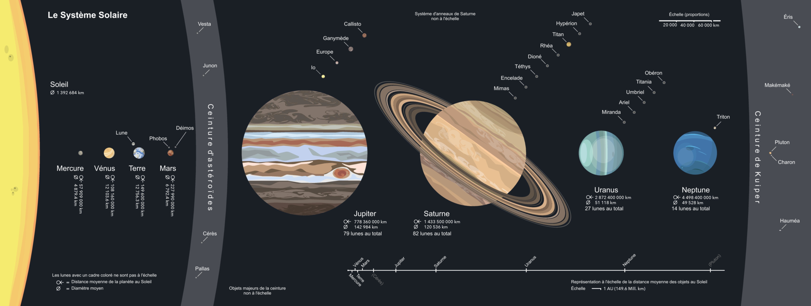

Le Système Solaire
Le système solaire est le système solaire dans lequel la Terre se trouve.
Location
Situé dans le bras d'Orion de la Voie lactée, il est situé à environ 26 100 al du centre galactique. En mouvement autour de ce centre, il effectue une rotation complète en 225 à 250 milli d'années
Composition
le système solaire est composé du soleil en son centre et des objets célestes gravitant autour d'elle: les huit planètes confirmées et leurs 214 satellites naturels connus (appelés usuellement des « lunes »), les cinq planètes naines et leurs neuf satellites connus, ainsi que des milliards de petits corps (la presque totalité des astéroïdes et autres planètes mineures, les comètes, les poussières cosmiques, etc.).
Schématisation de la répartition des corps
De façon schématique, le Système solaire est composé du Soleil, puis, par ordre d'éloignement croissant à l'étoile, le Système solaire interne comprend quatre planètes telluriques internes, principalement composées de roches et de métaux (Mercure, Vénus, la Terre et Mars) puis une ceinture d'astéroïdes de petits corps rocheux, dont la planète naine Cérès. Plus loin orbitent les quatre planètes géantes du Système solaire externe : Jupiter, Saturne, Uranus et Neptune. Tous ont une orbite proche du cercle et sont concentrés près du plan de l'écliptique, le plan de rotation de la Terre. Les objets situés au-delà de l'orbite de Neptune, dits transneptuniens, comprennent notamment la ceinture de Kuiper et le disque des objets épars, formés d'objets glacés. Quatre planètes naines glacées se trouvent dans la région transneptunienne et sont également appelées plutoïdes: Pluton, Hauméa, Makémaké et Éris. L'héliopause, limite magnétique du Système solaire, est définie par l'arrêt des vents solaires face aux vents du milieu interstellaire à une centaine d'unités astronomiques, tandis que la limite gravitationnelle du Système solaire se situe bien plus loin encore, jusqu'à une ou deux années-lumière du Soleil, vers laquelle une zone sphérique hypothétique, le nuage de Oort, pourrait exister et être la source des comètes à longue période.
{kind=link}
Formation
Le système solaire s'est formé il y a un peu moins de 4,6 milliards d'années à partir de l'effondrement gravitationnel d'un nuage moléculaire, suivi de la constitution d'un disque protoplanétaire qelon l'hypothèse de la nébuleuse.